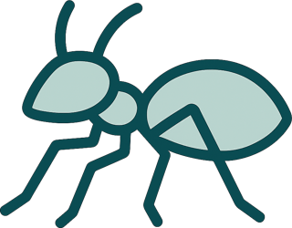
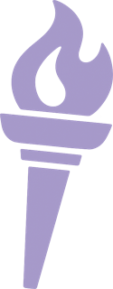
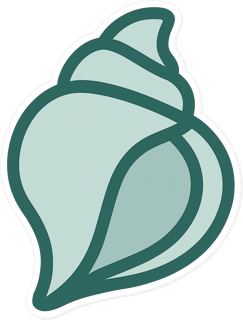

<title>Rekonoce Blueprint</title>
<meta name="claude:viewport-fit-sides" content="cover">
<link rel="preconnect" href="https://fonts.googleapis.com">
<link rel="stylesheet" href="https://fonts.googleapis.com/css2?family=Poppins:ital,wght@0,300;0,400;0,500;0,600;1,300&family=JetBrains+Mono:wght@400&display=swap">
<style>
/* Layout: documento de una columna (máx 1040px) con bandas oscuras de marca; los mockups del app viven en una tira horizontal propia. */
:root{
  --bg:#FFFFFF; --soft:#F4F4F3; --line:#E6E5E3; --silver:#C2C2C2;
  --ink:#2C2C2B; --ink-2:#474747; --ink-3:#5F5E5A; --black:#000000;
  --green:#B9D4B0; --green-wash:#DDE8D7; --green-sage:#AEC3A7; --lilac:#B6AAD1; --lilac-wash:#E7E2F1;
  --band:#2C2C2B; --band-fg:#F4F4F3; --band-fg-2:#C2C2C2;
  --code-bg:#F4F4F3;
  /* Pilares (tomados de los pines) */
  --p-colab:#0E4B55; --p-colab-fill:#B9D5D1;
  --p-comun:#2B6A5E; --p-comun-fill:#C4DED6;
  --p-resp:#5C5290;  --p-resp-fill:#ADA7CF;
  --p-respo:#5A4C8C; --p-respo-fill:#A69BCB;
  /* App (siempre noche Kibernum) */
  --app-bg:#161616; --app-surface:#242423; --app-raised:#2F2F2E; --app-line:#3B3B39;
  --app-fg:#F4F4F3; --app-fg-2:#C2C2C2; --app-fg-3:#9A9893;
  --font:"Poppins",system-ui,Arial,sans-serif; --mono:"JetBrains Mono",ui-monospace,Menlo,monospace;
  --r:6px;
}
@media (prefers-color-scheme: dark){:root:not([data-theme="light"]){
  --bg:#1B1B1A; --soft:#242423; --line:#353533; --silver:#5F5E5A;
  --ink:#F4F4F3; --ink-2:#D6D5D2; --ink-3:#AAA8A3; --black:#000000;
  --green-wash:#2D3A2A; --lilac-wash:#322E40;
  --band:#0F0F0F; --code-bg:#242423;
  --p-colab:#8CC3C9; --p-comun:#9FD0C2; --p-resp:#C3BCE3; --p-respo:#BDB2E0;
  color-scheme:dark;
}}
:root[data-theme="dark"]{
  --bg:#1B1B1A; --soft:#242423; --line:#353533; --silver:#5F5E5A;
  --ink:#F4F4F3; --ink-2:#D6D5D2; --ink-3:#AAA8A3; --black:#000000;
  --green-wash:#2D3A2A; --lilac-wash:#322E40;
  --band:#0F0F0F; --code-bg:#242423;
  --p-colab:#8CC3C9; --p-comun:#9FD0C2; --p-resp:#C3BCE3; --p-respo:#BDB2E0;
  color-scheme:dark;
}
*{box-sizing:border-box}
body{background:var(--bg);color:var(--ink-2);font-family:var(--font);font-size:16px;line-height:1.6}
.wrap{max-width:1040px;margin:0 auto;padding-left:max(16px,env(safe-area-inset-left,0px));padding-right:max(16px,env(safe-area-inset-right,0px))}
h1,h2,h3,h4{color:var(--ink);text-wrap:balance;margin:0}
h2{font-weight:300;font-size:clamp(26px,4vw,36px);line-height:1.2}
h3{font-weight:600;font-size:15px;letter-spacing:.06em;text-transform:uppercase}
p{margin:0}
.lead{font-size:18px;max-width:64ch}
code,.mono{font-family:var(--mono);font-size:13.5px}
a{color:inherit}

/* Banda */
.band{background:var(--band);color:var(--band-fg)}
.band .wrap{display:flex;align-items:center;gap:14px;padding-block:14px}
.logo{display:flex;align-items:center;gap:8px;font-weight:600;letter-spacing:.06em;font-size:14px}
.logo svg{width:22px;height:22px}
.band .sep{width:1px;height:18px;background:#474747}
.band .doc{font-weight:300;letter-spacing:.3em;text-transform:uppercase;font-size:12px;color:var(--band-fg-2)}

/* Hero */
.hero{background:var(--black);color:#F4F4F3;position:relative;overflow:hidden}
.hero .wrap{position:relative;z-index:1;padding-block:56px 48px;display:grid;grid-template-columns:1.2fr 1fr;gap:32px;align-items:center}
.hero h1{color:#F4F4F3;font-weight:300;font-size:clamp(44px,8vw,84px);letter-spacing:.02em;line-height:1}
.hero h1 b{font-weight:600}
.hero .kick{font-weight:300;letter-spacing:.34em;text-transform:uppercase;font-size:12px;color:var(--green)}
.hero .tag{color:#C2C2C2;font-size:18px;max-width:46ch;margin-top:18px}
.hero .rule{height:1px;background:var(--green);width:72px;margin:22px 0}
.hero .facts{display:flex;flex-wrap:wrap;gap:8px;margin-top:22px}
.hero .facts span{border:1px solid #474747;border-radius:999px;padding:4px 12px;font-size:13px;color:#E6E5E3}
.pinrow{display:grid;grid-template-columns:repeat(2,1fr);gap:16px;justify-items:center}
.medal{width:132px;aspect-ratio:1;border-radius:50%;background:#F4F4F3;display:grid;place-items:center;border:1px solid #474747;max-width:100%}
.medal img{width:64%;height:64%;object-fit:contain}
.medal.sm{width:52px}
.waves{position:absolute;inset:0;width:100%;height:100%;opacity:.55;pointer-events:none}

section.block{padding-block:56px;border-bottom:1px solid var(--line)}
.sec-head{display:flex;align-items:center;gap:14px;margin-bottom:10px}
.num{background:var(--green);color:#2C2C2B;font-weight:600;font-size:13px;border-radius:var(--r);padding:2px 9px;font-variant-numeric:tabular-nums}
.sec-head h3{color:var(--ink)}
.sec-head .ln{flex:1;height:1px;background:var(--line)}
.sec-title{margin-bottom:12px}
.stack{display:grid;gap:20px}

/* Pilares */
.pillars{display:grid;grid-template-columns:repeat(4,1fr);gap:12px;margin-top:28px}
.pillar{border:1px solid var(--line);border-radius:var(--r);padding:18px;display:grid;gap:10px;align-content:start;min-width:0}
.pillar .medal{width:64px;border-color:var(--line)}
.pillar h4{font-weight:500;font-size:17px}
.pillar .q{font-size:14px;color:var(--ink-3)}
.pillar .sw{display:flex;gap:6px}
.pillar .sw i{width:22px;height:22px;border-radius:4px;border:1px solid var(--line)}
.pillar .sym{font-size:12px;letter-spacing:.08em;text-transform:uppercase;font-weight:600}

/* Timeline */
.timeline{display:grid;grid-template-columns:repeat(5,1fr);gap:0;margin-top:28px;border:1px solid var(--line);border-radius:var(--r);overflow:hidden}
.step{padding:18px;border-right:1px solid var(--line);display:grid;gap:6px;align-content:start;min-width:0}
.step:last-child{border-right:0}
.step .when{font-size:12px;letter-spacing:.08em;text-transform:uppercase;color:var(--ink-3);font-weight:600}
.step h4{font-weight:500;font-size:17px}
.step p{font-size:14px}
.step.hl{background:var(--green-wash)}
.step.hl2{background:var(--lilac-wash)}

/* Reglas */
.rules{display:grid;grid-template-columns:1fr 1fr;gap:12px;margin-top:24px}
.rule-card{background:var(--soft);border-radius:var(--r);padding:18px;display:grid;grid-template-columns:auto 1fr;gap:4px 14px;min-width:0}
.rule-card .id{font-family:var(--mono);font-size:12px;color:var(--ink-3);padding-top:3px;grid-row:span 2}
.rule-card h4{font-weight:500;font-size:16px}
.rule-card p{font-size:14.5px}

/* Ejemplo de conteo */
.split{display:grid;grid-template-columns:1fr 1fr;gap:24px;margin-top:24px;align-items:start}
.split>*{min-width:0}
table{border-collapse:collapse;width:100%;font-size:14.5px;font-variant-numeric:tabular-nums}
th{font-size:11.5px;letter-spacing:.08em;text-transform:uppercase;color:var(--ink-3);font-weight:600;text-align:left;padding:8px 10px;border-bottom:1px solid var(--line)}
td{padding:9px 10px;border-bottom:1px solid var(--line);color:var(--ink-2)}
tr.key td{background:var(--green-wash);color:var(--ink)}
tr.tie td{background:var(--lilac-wash);color:var(--ink)}
.tblwrap{overflow-x:auto;border:1px solid var(--line);border-radius:var(--r)}
.note{font-size:13.5px;color:var(--ink-3);margin-top:10px}
.bar{height:8px;border-radius:4px;background:var(--green);display:inline-block;vertical-align:middle;margin-right:8px}
.quote{background:var(--soft);border-left:3px solid var(--green);padding:14px 18px;border-radius:0 var(--r) var(--r) 0;font-style:italic;font-weight:300;color:var(--ink-2)}
pre.code{background:var(--code-bg);border:1px solid var(--line);border-radius:var(--r);padding:16px 18px;overflow-x:auto;font-family:var(--mono);font-size:12.8px;line-height:1.6;color:var(--ink);margin:0}
pre.code .c{color:var(--ink-3)}
pre.code .k{color:var(--p-resp);font-weight:500}

/* Mockups */
.screens{display:flex;gap:24px;overflow-x:auto;padding:28px 4px 18px;scroll-snap-type:x mandatory}
.shot{flex:0 0 auto;display:grid;gap:12px;scroll-snap-align:start;width:292px}
.shot .cap{font-size:13.5px;color:var(--ink-3)}
.shot .cap b{color:var(--ink);font-weight:600;display:block;font-size:14px}
.phone{width:292px;height:600px;border-radius:40px;background:#000;padding:10px;border:1px solid var(--silver)}
.scr{width:100%;height:100%;border-radius:31px;background:var(--app-bg);color:var(--app-fg);overflow:hidden;position:relative;display:flex;flex-direction:column;font-size:13px;line-height:1.45}
.sb{display:flex;justify-content:space-between;padding:12px 22px 4px;font-size:11px;font-weight:500;color:var(--app-fg)}
.sb .isl{width:76px;height:20px;background:#000;border-radius:12px;margin-top:-4px}
.ab{padding:8px 18px 0;display:flex;align-items:center;justify-content:space-between}
.ab .k{display:flex;align-items:center;gap:6px;font-weight:600;font-size:12px;letter-spacing:.08em}
.ab .k svg{width:16px;height:16px}
.av{width:30px;height:30px;border-radius:50%;display:grid;place-items:center;font-size:11px;font-weight:600;color:#2C2C2B;flex:0 0 auto}
.body{padding:12px 18px;display:flex;flex-direction:column;gap:10px;flex:1;min-height:0}
.app-h{font-weight:300;font-size:22px;line-height:1.2;color:var(--app-fg)}
.app-sub{color:var(--app-fg-2);font-size:12.5px}
.chip{display:inline-flex;align-items:center;gap:6px;border-radius:999px;padding:3px 10px;font-size:11px;font-weight:500;background:var(--app-raised);color:var(--app-fg-2);width:max-content}
.chip.live{background:var(--green);color:#2C2C2B}
.chip .dot{width:6px;height:6px;border-radius:50%;background:#2C2C2B}
.prog{display:flex;gap:4px}
.prog i{flex:1;height:4px;border-radius:2px;background:var(--app-line)}
.prog i.on{background:var(--green)}
.pcard{border-radius:14px;padding:12px;display:flex;align-items:center;gap:12px;background:var(--app-surface);border:1px solid var(--app-line)}
.pcard .md{width:46px;height:46px;border-radius:50%;background:#F4F4F3;display:grid;place-items:center;flex:0 0 auto}
.pcard .md img{width:66%;height:66%;object-fit:contain}
.pcard .t{flex:1;min-width:0}
.pcard .t b{font-weight:500;font-size:14px;display:block}
.pcard .t span{color:var(--app-fg-3);font-size:11.5px}
.pcard .st{font-size:11px;color:var(--app-fg-3)}
.pcard .ok{width:22px;height:22px;border-radius:50%;background:var(--green);display:grid;place-items:center}
.pcard .ok svg{width:12px;height:12px}
.pcard.colab{background:#123A42;border-color:#1E5560}
.hdr{border-radius:16px;padding:14px;display:flex;gap:12px;align-items:center}
.hdr .md{width:54px;height:54px;border-radius:50%;background:#F4F4F3;display:grid;place-items:center;flex:0 0 auto}
.hdr .md img{width:66%;height:66%;object-fit:contain}
.search{background:var(--app-surface);border:1px solid var(--app-line);border-radius:10px;padding:8px 12px;color:var(--app-fg-3);font-size:12px}
.people{display:grid;grid-template-columns:repeat(3,1fr);gap:8px}
.person{border-radius:12px;padding:10px 4px 8px;display:grid;justify-items:center;gap:4px;background:var(--app-surface);border:1px solid var(--app-line);text-align:center}
.person .av{width:38px;height:38px;font-size:12px}
.person b{font-weight:500;font-size:11.5px;color:var(--app-fg)}
.person span{font-size:9.5px;color:var(--app-fg-3);text-transform:uppercase;letter-spacing:.06em}
.person.sel{border-color:var(--green);background:#26332A}
.person.off{opacity:.38}
.cta{margin-top:auto;background:var(--app-fg);color:#161616;border-radius:12px;padding:12px;text-align:center;font-weight:600;font-size:13px}
.cta.ghost{background:transparent;color:var(--app-fg);border:1px solid var(--app-line)}
.ta{background:var(--app-surface);border:1px solid var(--green);border-radius:12px;padding:12px;font-size:12.5px;color:var(--app-fg);min-height:110px}
.ta .cnt{display:block;text-align:right;color:var(--app-fg-3);font-size:10.5px;margin-top:8px}
.sugg{display:flex;flex-wrap:wrap;gap:6px}
.sugg span{border:1px solid var(--app-line);border-radius:999px;padding:3px 9px;font-size:10.5px;color:var(--app-fg-2)}
.fin{border-radius:14px;padding:12px;background:var(--app-surface);border:1px solid var(--app-line);display:grid;gap:8px}
.fin.sel{border-color:var(--lilac);background:#2B2838}
.fin .row{display:flex;align-items:center;gap:10px}
.fin .row b{font-weight:500;font-size:13.5px;flex:1}
.fin q{font-style:italic;font-weight:300;color:var(--app-fg-2);font-size:11.5px;quotes:"«" "»"}
.radio{width:18px;height:18px;border-radius:50%;border:1.5px solid var(--app-fg-3)}
.radio.on{border:5px solid var(--lilac)}
.reveal{flex:1;display:flex;flex-direction:column;align-items:center;justify-content:center;text-align:center;gap:10px;padding:16px 20px;position:relative}
.reveal .halo{width:150px;height:150px;border-radius:50%;background:#F4F4F3;display:grid;place-items:center;box-shadow:0 0 0 10px rgba(166,155,203,.18),0 0 0 22px rgba(166,155,203,.08)}
.reveal .halo img{width:60%;height:60%;object-fit:contain}
.reveal .eyebrow{letter-spacing:.3em;font-size:10px;text-transform:uppercase;color:var(--lilac);font-weight:500}
.reveal .nm{font-size:26px;font-weight:300}
.reveal q{font-style:italic;font-weight:300;font-size:12px;color:var(--app-fg-2);quotes:"«" "»"}
.hall{display:grid;grid-template-columns:auto repeat(4,1fr);gap:6px;align-items:center;font-size:10.5px}
.hall .m{color:var(--app-fg-3);text-transform:uppercase;letter-spacing:.06em;font-size:9.5px}
.hall .cell{aspect-ratio:1;border-radius:50%;display:grid;place-items:center;font-weight:600;color:#2C2C2B;font-size:10px}
.hall .hd{display:grid;place-items:center}
.hall .hd .md{width:30px;height:30px;border-radius:50%;background:#F4F4F3;display:grid;place-items:center}
.hall .hd img{width:66%;height:66%;object-fit:contain}
.tabbar{display:flex;justify-content:space-around;padding:10px 12px 16px;border-top:1px solid var(--app-line);background:var(--app-bg)}
.tabbar span{display:grid;justify-items:center;gap:3px;font-size:9.5px;color:var(--app-fg-3)}
.tabbar span.on{color:var(--app-fg)}
.tabbar svg{width:18px;height:18px}
.waveapp{position:absolute;inset:auto 0 0 0;height:160px;opacity:.5;pointer-events:none}

/* Sistema de diseño */
.tokens{display:grid;grid-template-columns:repeat(auto-fill,minmax(150px,1fr));gap:10px;margin-top:16px}
.tok{border:1px solid var(--line);border-radius:var(--r);overflow:hidden;min-width:0}
.tok i{display:block;height:56px;border-bottom:1px solid var(--line)}
.tok div{padding:8px 10px;display:grid}
.tok b{font-weight:500;font-size:13.5px;color:var(--ink)}
.tok span{font-family:var(--mono);font-size:11.5px;color:var(--ink-3)}
.typescale{display:grid;gap:0;border:1px solid var(--line);border-radius:var(--r);margin-top:16px}
.ts{display:grid;grid-template-columns:150px 1fr;gap:16px;padding:14px 18px;border-bottom:1px solid var(--line);align-items:baseline}
.ts:last-child{border-bottom:0}
.ts .meta{font-family:var(--mono);font-size:11.5px;color:var(--ink-3)}
.ts .s{color:var(--ink);min-width:0;overflow-wrap:anywhere}
.comps{display:grid;grid-template-columns:repeat(3,1fr);gap:12px;margin-top:16px}
.comp{border:1px solid var(--line);border-radius:var(--r);overflow:hidden;display:grid;grid-template-rows:auto 1fr;min-width:0}
.comp .stage{background:var(--app-bg);padding:18px;display:grid;place-items:center;min-height:130px;color:var(--app-fg)}
.comp .info{padding:12px 14px;display:grid;gap:4px;align-content:start}
.comp .info b{color:var(--ink);font-weight:500;font-size:14.5px}
.comp .info p{font-size:13.5px}
.motion{display:grid;grid-template-columns:repeat(3,1fr);gap:12px;margin-top:16px}
.mo{background:var(--soft);border-radius:var(--r);padding:16px;display:grid;gap:6px}
.mo b{font-weight:500;color:var(--ink)}
.mo p{font-size:14px}
.mo code{color:var(--ink-3)}

/* Arquitectura */
.arch{display:grid;grid-template-columns:repeat(4,1fr);gap:12px;margin-top:24px}
.layer{border:1px solid var(--line);border-radius:var(--r);padding:16px;display:grid;gap:8px;align-content:start;min-width:0}
.layer.dark{background:var(--band);border-color:var(--band);color:var(--band-fg-2)}
.layer.dark h4{color:var(--band-fg)}
.layer .lbl{font-size:11.5px;letter-spacing:.08em;text-transform:uppercase;font-weight:600;color:var(--ink-3)}
.layer.dark .lbl{color:var(--green)}
.layer h4{font-weight:500;font-size:17px}
.layer ul{margin:0;padding-left:18px;font-size:14px;display:grid;gap:4px}
.diagram{margin-top:24px;border:1px solid var(--line);border-radius:var(--r);padding:16px;overflow-x:auto;background:var(--bg)}
.erd{display:grid;grid-template-columns:repeat(3,1fr);gap:12px;margin-top:20px}
.ent{border:1px solid var(--line);border-radius:var(--r);overflow:hidden;min-width:0}
.ent h4{background:var(--soft);font-family:var(--mono);font-weight:400;font-size:13.5px;padding:8px 12px;border-bottom:1px solid var(--line)}
.ent ul{list-style:none;margin:0;padding:8px 12px;font-family:var(--mono);font-size:12px;display:grid;gap:3px;color:var(--ink-2)}
.ent li span{color:var(--ink-3)}
.ent li.pk::before{content:"PK ";color:var(--p-colab);font-weight:600}
.ent li.fk::before{content:"FK ";color:var(--p-resp);font-weight:600}
.ent li.uq{color:var(--ink);background:var(--green-wash);margin:2px -12px;padding:2px 12px}

/* Decisiones */
.decisions{display:grid;gap:10px;margin-top:20px}
.dec{display:grid;grid-template-columns:auto 1fr;gap:14px;border:1px solid var(--line);border-radius:var(--r);padding:16px 18px;align-items:start}
.dec .q{font-weight:500;color:var(--ink);font-size:15.5px}
.dec .rec{font-size:14px;margin-top:4px}
.dec .rec b{color:var(--ink);font-weight:600}
.dec .tag{font-size:11px;font-weight:600;letter-spacing:.06em;text-transform:uppercase;background:var(--lilac);color:#2C2C2B;border-radius:999px;padding:3px 10px;white-space:nowrap}
.dec .tag.g{background:var(--green)}

footer{background:var(--black);color:#C2C2C2}
footer .wrap{padding-block:40px;display:flex;justify-content:space-between;gap:16px;flex-wrap:wrap;align-items:center}
footer .mot{font-weight:300;letter-spacing:.3em;text-transform:uppercase;font-size:13px;color:#F4F4F3}

@media (max-width:900px){
  .hero .wrap{grid-template-columns:1fr}
  .pinrow{grid-template-columns:repeat(4,1fr);gap:10px}
  .medal{width:76px}
  .pillars{grid-template-columns:1fr 1fr}
  .timeline{grid-template-columns:1fr}
  .step{border-right:0;border-bottom:1px solid var(--line)}
  .step:last-child{border-bottom:0}
  .rules,.split{grid-template-columns:1fr}
  .comps,.motion,.erd{grid-template-columns:1fr 1fr}
  .arch{grid-template-columns:1fr 1fr}
}
@media (max-width:560px){
  .pillars,.comps,.motion,.erd,.arch{grid-template-columns:1fr}
  .ts{grid-template-columns:1fr;gap:4px}
  .dec{grid-template-columns:1fr}
  .band .doc{display:none}
}
@media (prefers-reduced-motion:no-preference){
  .reveal .halo{animation:breathe 4s ease-in-out infinite}
  @keyframes breathe{50%{box-shadow:0 0 0 14px rgba(166,155,203,.2),0 0 0 30px rgba(166,155,203,.07)}}
}
:focus-visible{outline:2px solid var(--green);outline-offset:2px}
</style>

<svg width="0" height="0" style="position:absolute" aria-hidden="true">
  <defs>
    <symbol id="klogo" viewBox="0 0 24 24"><path d="M4 4h4v16H4zM9 12l7-8h5l-7 8 7 8h-5z" fill="currentColor"/></symbol>
    <symbol id="check" viewBox="0 0 12 12"><path d="M2.5 6.2l2.3 2.3 4.7-5" stroke="#2C2C2B" stroke-width="1.8" fill="none" stroke-linecap="round" stroke-linejoin="round"/></symbol>
  </defs>
</svg>

<header class="band">
  <div class="wrap">
    <span class="logo"><svg aria-hidden="true"><use href="#klogo"/></svg>KIBERNUM</span>
    <span class="sep"></span>
    <span class="doc">Kiber Champions · Blueprint v0.1</span>
  </div>
</header>

<section class="hero">
  <svg class="waves" viewBox="0 0 1200 500" preserveAspectRatio="none" aria-hidden="true">
    <g fill="none" stroke-width="1">
      <path d="M0 360 C 200 260, 380 460, 600 330 S 1000 220, 1200 320" stroke="#B9D5D1" opacity=".5"/>
      <path d="M0 375 C 200 275, 380 475, 600 345 S 1000 235, 1200 335" stroke="#B9D5D1" opacity=".4"/>
      <path d="M0 390 C 200 290, 380 490, 600 360 S 1000 250, 1200 350" stroke="#B9D5D1" opacity=".3"/>
      <path d="M0 405 C 220 330, 400 470, 620 380 S 1020 290, 1200 380" stroke="#B6AAD1" opacity=".45"/>
      <path d="M0 420 C 220 345, 400 485, 620 395 S 1020 305, 1200 395" stroke="#B6AAD1" opacity=".35"/>
      <path d="M0 435 C 220 360, 400 500, 620 410 S 1020 320, 1200 410" stroke="#B6AAD1" opacity=".25"/>
    </g>
  </svg>
  <div class="wrap">
    <div>
      <p class="kick">Kiber Champions · app mensual</p>
      <h1 style="margin-top:14px">Re<b>k</b>onoce</h1>
      <div class="rule"></div>
      <p class="tag">Una app mobile first para que el equipo se reconozca cada mes en los cuatro pilares. Primero nominamos, luego elegimos entre tres finalistas, y al final celebramos al Champion de cada pilar con su pin.</p>
      <div class="facts"><span>14 personas</span><span>4 pilares</span><span>2 rondas de voto</span><span>1 ceremonia al mes</span></div>
    </div>
    <div class="pinrow" aria-label="Los cuatro pines">
      <div class="medal"></div>
      <div class="medal"></div>
      <div class="medal"></div>
      <div class="medal"></div>
    </div>
  </div>
</section>

<main>
<!-- 01 PILARES -->
<section class="block"><div class="wrap">
  <div class="sec-head"><span class="num">01</span><h3>Los cuatro pilares</h3><span class="ln"></span></div>
  <h2 class="sec-title">Cada pilar es una pregunta concreta, no una etiqueta.</h2>
  <p class="lead">En la app nadie vota por “Colaboración” en abstracto. Cada pilar se presenta como una pregunta sobre lo que pasó este mes, con el texto de las bases de los pines. Así el voto se basa en hechos y el motivo sale solo.</p>
  <div class="pillars">
    <article class="pillar">
      <div class="medal"></div>
      <span class="sym" style="color:var(--p-colab)">Hormiga</span>
      <h4>Colaboración</h4>
      <p class="q">¿Quién compartió lo que sabe, apoyó sin que se lo pidieran y puso al equipo por sobre lo individual?</p>
      <div class="sw"><i style="background:#0E4B55"></i><i style="background:#B9D5D1"></i></div>
    </article>
    <article class="pillar">
      <div class="medal"></div>
      <span class="sym" style="color:var(--p-respo)">Antorcha</span>
      <h4>Responsabilidad</h4>
      <p class="q">¿Quién mantuvo la llama del compromiso, cuidó la calidad y cumplió incluso cuando nadie estaba mirando?</p>
      <div class="sw"><i style="background:#5A4C8C"></i><i style="background:#A69BCB"></i></div>
    </article>
    <article class="pillar">
      <div class="medal"></div>
      <span class="sym" style="color:var(--p-resp)">Torii</span>
      <h4>Respeto</h4>
      <p class="q">¿Quién escuchó con atención plena, cuidó las palabras y nos hizo sentir valorados y seguros?</p>
      <div class="sw"><i style="background:#5C5290"></i><i style="background:#ADA7CF"></i></div>
    </article>
    <article class="pillar">
      <div class="medal"></div>
      <span class="sym" style="color:var(--p-comun)">Caracola</span>
      <h4>Comunicación</h4>
      <p class="q">¿Quién logró que las ideas se entendieran, conectó a las personas y nos mantuvo en sintonía?</p>
      <div class="sw"><i style="background:#2B6A5E"></i><i style="background:#C4DED6"></i></div>
    </article>
  </div>
</div></section>

<!-- 02 CICLO -->
<section class="block"><div class="wrap">
  <div class="sec-head"><span class="num">02</span><h3>El ciclo mensual</h3><span class="ln"></span></div>
  <h2 class="sec-title">Un mes, cinco fases. La app siempre sabe en cuál está.</h2>
  <p class="lead">El ciclo es una máquina de estados. Cada fase abre y cierra sola por fecha (o la adelanta el admin), y la pantalla de inicio cambia según la fase. Las fechas son una propuesta en días hábiles.</p>
  <div class="timeline">
    <div class="step"><span class="when">Día hábil 1 a 5</span><h4>Nominación</h4><p>Cada persona elige a 1 compañero por pilar y escribe por qué. Nadie ve resultados.</p></div>
    <div class="step"><span class="when">Cierre automático</span><h4>Conteo</h4><p>El sistema calcula los 3 finalistas por pilar aplicando las reglas de desempate.</p></div>
    <div class="step hl"><span class="when">Día hábil 6 a 8</span><h4>Votación final</h4><p>Todos votan otra vez, ahora solo entre los 3 finalistas de cada pilar.</p></div>
    <div class="step hl2"><span class="when">Reunión de equipo</span><h4>Revelación</h4><p>El admin abre los sobres en vivo. Cada ganador aparece con animación y los motivos.</p></div>
    <div class="step"><span class="when">Resto del mes</span><h4>Salón</h4><p>Ganadores y motivos quedan en el Salón de Champions. Se entrega el pin físico.</p></div>
  </div>
  <div class="diagram">
<pre class="mermaid">
stateDiagram-v2
  direction LR
  [*] --> borrador : admin crea el mes
  borrador --> nominacion : abre fecha
  nominacion --> nominacion : quórum no alcanzado, se extiende 48 h (una vez)
  nominacion --> conteo : cierra fecha
  conteo --> final : finalistas listos
  final --> sellado : cierra fecha
  sellado --> revelado : admin revela en la reunión
  revelado --> [*]
</pre>
  </div>
  <p class="note">“Sellado” significa que los ganadores ya están calculados y guardados, pero nadie los ve hasta que el admin los revela. Eso protege la sorpresa de la ceremonia.</p>
</div></section>

<!-- 03 REGLAS -->
<section class="block"><div class="wrap">
  <div class="sec-head"><span class="num">03</span><h3>La lógica</h3><span class="ln"></span></div>
  <h2 class="sec-title">Diez reglas que hacen que el voto sea justo y se sienta justo.</h2>
  <p class="lead">Con 14 personas cada voto pesa mucho. Las reglas buscan tres cosas: que se vote por hechos, que el reconocimiento se reparta y que nadie sienta presión por cómo votó.</p>
  <div class="rules">
    <div class="rule-card"><span class="id">R1</span><h4>Un voto por pilar</h4><p>Cada persona nomina a una sola persona en cada pilar. Puede cambiarlo mientras la fase esté abierta.</p></div>
    <div class="rule-card"><span class="id">R2</span><h4>No hay autovoto</h4><p>Tu propia tarjeta aparece desactivada. La base de datos también lo impide.</p></div>
    <div class="rule-card"><span class="id">R3</span><h4>Motivo obligatorio</h4><p>Mínimo 40 caracteres con un hecho concreto del mes. Es la historia que se cuenta en la ceremonia.</p></div>
    <div class="rule-card"><span class="id">R4</span><h4>Puedes abstenerte</h4><p>Si en un pilar no tienes a nadie claro, marcas “Este mes no tengo nominación”. Mejor eso que un voto al azar.</p></div>
    <div class="rule-card"><span class="id">R5</span><h4>Mínimo 2 votos para ser finalista</h4><p>Se ordena por votos y pasan los 3 primeros que tengan al menos 2. Un voto aislado no basta.</p></div>
    <div class="rule-card"><span class="id">R6</span><h4>Desempate en el tercer lugar</h4><p>Gana quien recibió votos de más áreas distintas. Si siguen empatados, pasan todos (máximo 4 finalistas).</p></div>
    <div class="rule-card"><span class="id">R7</span><h4>Ronda final limpia</h4><p>Todos votan de nuevo entre los finalistas, sin ver los conteos de la ronda 1. Un finalista vota, pero no por sí mismo.</p></div>
    <div class="rule-card"><span class="id">R8</span><h4>Empate final: primero la nominación</h4><p>Si la ronda final empata, gana quien tuvo más votos en la nominación. Si sigue igual, el pin es compartido.</p></div>
    <div class="rule-card"><span class="id">R9</span><h4>Un pin por persona al mes</h4><p>Si alguien gana dos pilares, se queda con el de mayor porcentaje y el otro pasa al segundo lugar de ese pilar.</p></div>
    <div class="rule-card"><span class="id">R10</span><h4>Descanso de dos meses</h4><p>El Champion de un pilar no puede ser nominado en ese mismo pilar los 2 meses siguientes. Sí en los otros tres.</p></div>
  </div>
  <div class="rules" style="margin-top:12px">
    <div class="rule-card" style="background:var(--green-wash)"><span class="id">Quórum</span><h4>La ronda vale si votan 10 de 14</h4><p>Si al cierre hay menos, la fase se extiende 48 h una sola vez y la app envía un recordatorio. Después cierra igual.</p></div>
    <div class="rule-card" style="background:var(--lilac-wash)"><span class="id">Privacidad</span><h4>Nadie ve quién votó por quién</h4><p>Ni los compañeros ni el admin. El admin solo ve quién ya participó. Los motivos se muestran sin firma.</p></div>
  </div>

  <h3 style="margin-top:44px;color:var(--ink)">Ejemplo: pilar Comunicación, noviembre</h3>
  <div class="split">
    <div>
      <div class="tblwrap"><table>
        <thead><tr><th>Persona</th><th>Votos R1</th><th>Áreas</th><th>Resultado</th></tr></thead>
        <tbody>
          <tr class="key"><td>Persona A</td><td><span class="bar" style="width:50px"></span>5</td><td>3</td><td>Finalista 1</td></tr>
          <tr class="key"><td>Persona B</td><td><span class="bar" style="width:30px"></span>3</td><td>2</td><td>Finalista 2</td></tr>
          <tr class="tie"><td>Persona C</td><td><span class="bar" style="width:20px"></span>2</td><td>2</td><td>Finalista 3 (desempate R6)</td></tr>
          <tr><td>Persona D</td><td><span class="bar" style="width:20px"></span>2</td><td>1</td><td>Fuera por R6</td></tr>
          <tr><td>Persona E</td><td><span class="bar" style="width:10px"></span>1</td><td>1</td><td>Fuera por R5</td></tr>
          <tr><td>Abstenciones</td><td>1</td><td>·</td><td>·</td></tr>
        </tbody>
      </table></div>
      <p class="note">14 votantes: 13 nominaciones y 1 abstención. C y D empatan con 2 votos; C pasa porque sus votos vienen de dos áreas.</p>
    </div>
    <div class="stack">
      <div class="quote">“En la caída del ambiente de QA armó el canal, mandó un resumen cada hora y nadie del cliente quedó sin saber qué pasaba.”</div>
      <p style="font-size:14.5px">En la ronda final, los finalistas aparecen con un extracto anónimo de un motivo cada uno. Así la segunda vuelta también se decide por historias y no por popularidad.</p>
    </div>
  </div>

  <h3 style="margin-top:44px;color:var(--ink)">El algoritmo</h3>
  <p class="note" style="margin-top:6px;margin-bottom:12px">Corre en el servidor al cerrar cada fase. Es determinista: con los mismos votos siempre da el mismo resultado, y queda registrado por qué pasó cada persona.</p>
<pre class="code"><span class="c">// Ronda 1: de nominaciones a finalistas (por pilar)</span>
<span class="k">function</span> computeFinalists(noms, members, cooldown) {
  <span class="c">// noms: [{ voterId, nomineeId }] ya sin abstenciones ni autovotos</span>
  const tally = groupBy(noms, n =&gt; n.nomineeId).map(([id, vs]) =&gt; ({
    id,
    votes: vs.length,
    areas: new Set(vs.map(v =&gt; members[v.voterId].area)).size,  <span class="c">// R6</span>
  }))
  .filter(c =&gt; c.votes &gt;= 2 &amp;&amp; !cooldown.has(c.id))               <span class="c">// R5, R10</span>
  .sort((a, b) =&gt; b.votes - a.votes || b.areas - a.areas);

  if (tally.length &lt;= 3) return tally;
  const cut = tally[2];
  const above = tally.filter(c =&gt; c.votes &gt; cut.votes || (c.votes === cut.votes &amp;&amp; c.areas &gt; cut.areas));
  const tied  = tally.filter(c =&gt; c.votes === cut.votes &amp;&amp; c.areas === cut.areas);
  if (above.length + tied.length &lt;= 4) return above.concat(tied);         <span class="c">// R6: pasan todos</span>
  return above.concat(sorteoAuditable(tied, 3 - above.length));            <span class="c">// caso extremo, sorteo con semilla visible</span>
}

<span class="c">// Ronda 2: de finalistas a Champion (por pilar)</span>
<span class="k">function</span> computeWinner(finalVotes, finalists) {
  const ranked = finalists
    .map(f =&gt; ({ ...f, final: finalVotes.filter(v =&gt; v.finalistId === f.id).length }))
    .sort((a, b) =&gt; b.final - a.final || b.votes - a.votes);          <span class="c">// R8</span>
  const top = ranked.filter(r =&gt; r.final === ranked[0].final &amp;&amp; r.votes === ranked[0].votes);
  return { winners: top, shared: top.length &gt; 1, ranking: ranked };
}

<span class="c">// Después de los 4 pilares: R9, un pin por persona al mes</span>
<span class="k">function</span> resolveDoubleWins(results) {
  <span class="c">// si una persona gana 2 pilares: conserva el de mayor % de votos finales;</span>
  <span class="c">// en el otro pilar asciende el siguiente del ranking. Se repite hasta que no haya dobles.</span>
}</pre>
</div></section>

<!-- 04 PANTALLAS -->
<section class="block"><div class="wrap">
  <div class="sec-head"><span class="num">04</span><h3>Pantallas clave</h3><span class="ln"></span></div>
  <h2 class="sec-title">Votar los cuatro pilares toma menos de tres minutos.</h2>
  <p class="lead">El flujo sigue la lógica de las apps de categorías: eliges un pilar, eliges a la persona, cuentas por qué. La app vive en modo noche Kibernum y los pines siempre van sobre un medallón claro, como el pin real. Los nombres son de ejemplo.</p>
</div>
<div class="wrap">
<div class="screens" tabindex="0" aria-label="Mockups de pantallas, desplazar horizontalmente">

  <!-- Inicio -->
  <div class="shot">
    <div class="phone"><div class="scr">
      <div class="sb"><span>9:41</span><span class="isl"></span><span>5G</span></div>
      <div class="ab"><span class="k"><svg><use href="#klogo"/></svg>REKONOCE</span><span class="av" style="background:#B9D4B0">CR</span></div>
      <div class="body">
        <span class="chip live"><span class="dot"></span>Nominación · cierra en 3 días</span>
        <p class="app-h">Hola, Camila.<br>¿A quién reconoces en noviembre?</p>
        <div class="prog" aria-label="2 de 4 pilares"><i class="on"></i><i class="on"></i><i></i><i></i></div>
        <p class="app-sub">2 de 4 pilares listos</p>
        <div class="pcard colab"><div class="md"></div><div class="t"><b>Colaboración</b><span>Nominaste a Diego M.</span></div><span class="ok"><svg><use href="#check"/></svg></span></div>
        <div class="pcard"><div class="md"></div><div class="t"><b>Responsabilidad</b><span>Nominaste a Sofía P.</span></div><span class="ok"><svg><use href="#check"/></svg></span></div>
        <div class="pcard"><div class="md"></div><div class="t"><b>Respeto</b><span>Pendiente</span></div><span class="st">›</span></div>
        <div class="pcard"><div class="md"></div><div class="t"><b>Comunicación</b><span>Pendiente</span></div><span class="st">›</span></div>
      </div>
      <div class="tabbar"><span class="on"><svg viewBox="0 0 24 24" fill="none" stroke="currentColor" stroke-width="1.6"><path d="M4 11l8-6 8 6v8H4z"/></svg>Votar</span><span><svg viewBox="0 0 24 24" fill="none" stroke="currentColor" stroke-width="1.6"><circle cx="12" cy="9" r="5"/><path d="M9 13l-2 7 5-3 5 3-2-7"/></svg>Salón</span><span><svg viewBox="0 0 24 24" fill="none" stroke="currentColor" stroke-width="1.6"><circle cx="12" cy="8" r="4"/><path d="M4 20c1-4 4-6 8-6s7 2 8 6"/></svg>Mis pines</span></div>
    </div></div>
    <p class="cap"><b>Inicio</b>La fase actual y el avance personal. Cada pilar es una tarjeta; la de Colaboración usa el teal de la marca.</p>
  </div>

  <!-- Elegir persona -->
  <div class="shot">
    <div class="phone"><div class="scr">
      <div class="sb"><span>9:41</span><span class="isl"></span><span>5G</span></div>
      <div class="ab"><span class="k" style="font-weight:400;letter-spacing:0">‹ Volver</span><span class="app-sub">3 de 4</span></div>
      <div class="body">
        <div class="hdr" style="background:#2B2838"><div class="md"></div><div><b style="font-weight:500;font-size:15px">Respeto</b><p class="app-sub" style="font-size:11.5px">¿Quién escuchó con atención plena y nos hizo sentir seguros?</p></div></div>
        <div class="search">Buscar persona</div>
        <div class="people">
          <div class="person"><span class="av" style="background:#B9D5D1">DM</span><b>Diego M.</b><span>Delivery</span></div>
          <div class="person sel"><span class="av" style="background:#B9D4B0">MA</span><b>Margarita</b><span>Líder</span></div>
          <div class="person"><span class="av" style="background:#ADA7CF">SP</span><b>Sofía P.</b><span>Talent</span></div>
          <div class="person"><span class="av" style="background:#C4DED6">JL</span><b>Javier L.</b><span>D. Support</span></div>
          <div class="person off"><span class="av" style="background:#C2C2C2">CR</span><b>Tú</b><span>Talent</span></div>
          <div class="person"><span class="av" style="background:#A69BCB">VT</span><b>Valentina T.</b><span>Delivery</span></div>
          <div class="person"><span class="av" style="background:#AEC3A7">RG</span><b>Rodrigo G.</b><span>Delivery</span></div>
          <div class="person off"><span class="av" style="background:#C2C2C2">PF</span><b>Paula F.</b><span>Descanso</span></div>
          <div class="person"><span class="av" style="background:#B9D5D1">TA</span><b>Tomás A.</b><span>Talent</span></div>
        </div>
        <div class="cta">Continuar con Margarita</div>
      </div>
    </div></div>
    <p class="cap"><b>Elegir persona</b>Grilla de 14 con área visible. Tú y quien está en descanso (R10) aparecen apagados.</p>
  </div>

  <!-- Motivo -->
  <div class="shot">
    <div class="phone"><div class="scr">
      <div class="sb"><span>9:41</span><span class="isl"></span><span>5G</span></div>
      <div class="ab"><span class="k" style="font-weight:400;letter-spacing:0">‹ Volver</span><span class="app-sub">Respeto</span></div>
      <div class="body">
        <div style="display:flex;align-items:center;gap:10px"><span class="av" style="background:#B9D4B0;width:40px;height:40px">MA</span><div><b style="font-weight:500">Margarita</b><p class="app-sub" style="font-size:11px">Cuéntale al equipo por qué</p></div></div>
        <p class="app-h" style="font-size:18px">¿Qué hizo este mes que merece el torii?</p>
        <div class="ta">En la retro difícil de octubre dejó hablar a todos, frenó las interrupciones y después llamó uno a uno a quienes no habían opinado.<span class="cnt">142 / 40 mín.</span></div>
        <div class="sugg"><span>Me escuchó cuando…</span><span>Cuidó al equipo en…</span><span>Me hizo sentir…</span></div>
        <p class="app-sub" style="font-size:11px">Tu nombre no se muestra. Margarita leerá este motivo si gana.</p>
        <div class="cta">Enviar nominación</div>
      </div>
    </div></div>
    <p class="cap"><b>Motivo</b>Texto obligatorio con contador y frases de arranque para quien no sabe cómo empezar.</p>
  </div>

  <!-- Finalistas -->
  <div class="shot">
    <div class="phone"><div class="scr">
      <div class="sb"><span>9:41</span><span class="isl"></span><span>5G</span></div>
      <div class="ab"><span class="k"><svg><use href="#klogo"/></svg>REKONOCE</span><span class="chip" style="background:#B6AAD1;color:#2C2C2B">Votación final</span></div>
      <div class="body">
        <div class="hdr" style="background:#2B2838;padding:10px"><div class="md" style="width:42px;height:42px"></div><div><b style="font-weight:500">Responsabilidad</b><p class="app-sub" style="font-size:11px">Elige 1 entre los 3 finalistas</p></div></div>
        <div class="fin"><div class="row"><span class="av" style="background:#ADA7CF">SP</span><b>Sofía P.</b><span class="radio"></span></div><q>Se quedó el viernes cerrando el pase a producción para que el lunes nadie partiera apagando incendios.</q></div>
        <div class="fin sel"><div class="row"><span class="av" style="background:#B9D5D1">DM</span><b>Diego M.</b><span class="radio on"></span></div><q>Documentó todo el onboarding del cliente nuevo sin que nadie se lo pidiera.</q></div>
        <div class="fin"><div class="row"><span class="av" style="background:#A69BCB">VT</span><b>Valentina T.</b><span class="radio"></span></div><q>Cumplió cada entrega del sprint aunque estaba cubriendo a dos personas.</q></div>
        <div class="cta">Confirmar voto</div>
      </div>
    </div></div>
    <p class="cap"><b>Votación final</b>Tres finalistas con un motivo anónimo cada uno. Sin conteos visibles para evitar el efecto arrastre.</p>
  </div>

  <!-- Revelación -->
  <div class="shot">
    <div class="phone"><div class="scr" style="background:#0D0D0D">
      <svg class="waveapp" viewBox="0 0 300 160" preserveAspectRatio="none" aria-hidden="true"><g fill="none" stroke-width=".8"><path d="M0 90 C 60 40, 120 140, 180 80 S 260 40, 300 70" stroke="#B6AAD1" opacity=".6"/><path d="M0 100 C 60 50, 120 150, 180 90 S 260 50, 300 80" stroke="#B6AAD1" opacity=".45"/><path d="M0 110 C 60 60, 120 160, 180 100 S 260 60, 300 90" stroke="#B9D5D1" opacity=".4"/><path d="M0 120 C 60 70, 120 170, 180 110 S 260 70, 300 100" stroke="#B9D5D1" opacity=".3"/></g></svg>
      <div class="sb"><span>9:41</span><span class="isl"></span><span>5G</span></div>
      <div class="reveal">
        <span class="eyebrow">Champion de Respeto · Noviembre</span>
        <div class="halo"></div>
        <p class="nm">Margarita</p>
        <q>Dejó hablar a todos en la retro más difícil del año.</q>
        <q>Siempre pregunta cómo estás antes de preguntar cómo va la tarea.</q>
        <span class="chip" style="margin-top:6px">7 motivos recibidos</span>
      </div>
    </div></div>
    <p class="cap"><b>Revelación</b>Se ve en la pantalla grande de la reunión. El pin “respira” y aparecen los motivos de a uno.</p>
  </div>

  <!-- Salón -->
  <div class="shot">
    <div class="phone"><div class="scr">
      <div class="sb"><span>9:41</span><span class="isl"></span><span>5G</span></div>
      <div class="ab"><span class="k"><svg><use href="#klogo"/></svg>SALÓN</span><span class="app-sub">2026</span></div>
      <div class="body">
        <p class="app-h" style="font-size:19px">Salón de Champions</p>
        <p class="app-sub">Cada círculo es un pin entregado.</p>
        <div class="hall">
          <span></span>
          <span class="hd"><span class="md"></span></span>
          <span class="hd"><span class="md"></span></span>
          <span class="hd"><span class="md"></span></span>
          <span class="hd"><span class="md"></span></span>
          <span class="m">Nov</span><span class="cell" style="background:#B9D5D1">TA</span><span class="cell" style="background:#A69BCB">DM</span><span class="cell" style="background:#ADA7CF">MA</span><span class="cell" style="background:#C4DED6">JL</span>
          <span class="m">Oct</span><span class="cell" style="background:#B9D5D1">VT</span><span class="cell" style="background:#A69BCB">SP</span><span class="cell" style="background:#ADA7CF">RG</span><span class="cell" style="background:#C4DED6">PF</span>
          <span class="m">Sep</span><span class="cell" style="background:#B9D5D1">JL</span><span class="cell" style="background:#A69BCB">CR</span><span class="cell" style="background:#ADA7CF">TA</span><span class="cell" style="background:#C4DED6">DM</span>
          <span class="m">Ago</span><span class="cell" style="background:#B9D5D1">SP</span><span class="cell" style="background:#A69BCB">MA</span><span class="cell" style="background:#ADA7CF">VT</span><span class="cell" style="background:#C4DED6">RG</span>
        </div>
        <div class="pcard" style="margin-top:6px"><div class="t"><b>14 de 14</b><span>personas con al menos un motivo recibido este año</span></div></div>
      </div>
      <div class="tabbar"><span><svg viewBox="0 0 24 24" fill="none" stroke="currentColor" stroke-width="1.6"><path d="M4 11l8-6 8 6v8H4z"/></svg>Votar</span><span class="on"><svg viewBox="0 0 24 24" fill="none" stroke="currentColor" stroke-width="1.6"><circle cx="12" cy="9" r="5"/><path d="M9 13l-2 7 5-3 5 3-2-7"/></svg>Salón</span><span><svg viewBox="0 0 24 24" fill="none" stroke="currentColor" stroke-width="1.6"><circle cx="12" cy="8" r="4"/><path d="M4 20c1-4 4-6 8-6s7 2 8 6"/></svg>Mis pines</span></div>
    </div></div>
    <p class="cap"><b>Salón de Champions</b>Historial por mes y pilar. Muestra cómo se reparte el reconocimiento en el equipo.</p>
  </div>
</div>
</div>
<div class="wrap"><p class="note">Otras pantallas del MVP: ingreso con correo corporativo, “Mis pines” (pines ganados y todos los motivos recibidos, que solo ve la persona) y panel admin (crear mes, fechas, participación, revelar).</p></div>
</section>

<!-- 05 SISTEMA DE DISEÑO -->
<section class="block"><div class="wrap">
  <div class="sec-head"><span class="num">05</span><h3>Sistema de diseño</h3><span class="ln"></span></div>
  <h2 class="sec-title">Kibernum en modo noche, con los pines como único color fuerte.</h2>
  <p class="lead">La base es la línea gráfica Kibernum: negros y grises, Poppins, bordes finos, verde y lila suaves. Los pines aportan dos familias de color (teal y lila) y cada pilar se identifica siempre por su pin, nunca solo por el color.</p>

  <h3 style="margin-top:32px;color:var(--ink)">Color · superficies del app</h3>
  <div class="tokens">
    <div class="tok"><i style="background:#161616"></i><div><b>night</b><span>#161616 · fondo</span></div></div>
    <div class="tok"><i style="background:#242423"></i><div><b>surface</b><span>#242423 · tarjetas</span></div></div>
    <div class="tok"><i style="background:#2F2F2E"></i><div><b>raised</b><span>#2F2F2E · chips</span></div></div>
    <div class="tok"><i style="background:#3B3B39"></i><div><b>line</b><span>#3B3B39 · bordes</span></div></div>
    <div class="tok"><i style="background:#F4F4F3"></i><div><b>fg / medallón</b><span>#F4F4F3</span></div></div>
    <div class="tok"><i style="background:#C2C2C2"></i><div><b>fg-2</b><span>#C2C2C2 · secundario</span></div></div>
  </div>
  <h3 style="margin-top:28px;color:var(--ink)">Color · acentos y pilares</h3>
  <div class="tokens">
    <div class="tok"><i style="background:#B9D4B0"></i><div><b>green</b><span>#B9D4B0 · avance, CTA ok</span></div></div>
    <div class="tok"><i style="background:#B6AAD1"></i><div><b>lilac</b><span>#B6AAD1 · ronda final</span></div></div>
    <div class="tok"><i style="background:#0E4B55"></i><div><b>colab.deep</b><span>#0E4B55</span></div></div>
    <div class="tok"><i style="background:#B9D5D1"></i><div><b>colab.fill</b><span>#B9D5D1</span></div></div>
    <div class="tok"><i style="background:#2B6A5E"></i><div><b>comun.deep</b><span>#2B6A5E</span></div></div>
    <div class="tok"><i style="background:#C4DED6"></i><div><b>comun.fill</b><span>#C4DED6</span></div></div>
    <div class="tok"><i style="background:#ADA7CF"></i><div><b>respeto.fill</b><span>#ADA7CF</span></div></div>
    <div class="tok"><i style="background:#A69BCB"></i><div><b>respons.fill</b><span>#A69BCB</span></div></div>
  </div>
  <p class="note">Regla de contraste: los acentos pastel son superficies con texto #2C2C2B encima (8,7:1 sobre verde, 6,4:1 sobre lila), o texto sobre fondo noche. Nunca texto pastel sobre blanco.</p>

  <h3 style="margin-top:32px;color:var(--ink)">Tipografía · Poppins</h3>
  <div class="typescale">
    <div class="ts"><span class="meta">display · 300 · 32/1.1</span><span class="s" style="font-size:32px;font-weight:300;line-height:1.1">Champion de Respeto</span></div>
    <div class="ts"><span class="meta">title · 300 · 22/1.2</span><span class="s" style="font-size:22px;font-weight:300">¿A quién reconoces en noviembre?</span></div>
    <div class="ts"><span class="meta">heading · 500 · 15</span><span class="s" style="font-size:15px;font-weight:500">Responsabilidad</span></div>
    <div class="ts"><span class="meta">body · 400 · 14/1.5</span><span class="s" style="font-size:14px">Cuéntale al equipo qué hizo este mes.</span></div>
    <div class="ts"><span class="meta">eyebrow · 500 · 11 · +0.3em</span><span class="s" style="font-size:11px;font-weight:500;letter-spacing:.3em;text-transform:uppercase">Votación final</span></div>
    <div class="ts"><span class="meta">quote · 300 italic · 13</span><span class="s" style="font-size:13px;font-weight:300;font-style:italic">«Dejó hablar a todos en la retro más difícil del año.»</span></div>
  </div>
  <p class="note">Mínimo 12 px en el app (el eyebrow de 11 px solo en mayúsculas con espaciado). Espaciado en múltiplos de 4. Radios: 6 px en documentos, 12 a 16 px en tarjetas del app para que se sienta táctil; botones de 48 px de alto mínimo.</p>

  <h3 style="margin-top:32px;color:var(--ink)">Componentes</h3>
  <div class="comps">
    <div class="comp"><div class="stage"><div class="medal" style="width:84px;border-color:#3B3B39"></div></div><div class="info"><b>PinMedallion</b><p>Pin sobre disco #F4F4F3. Tamaños 32, 46, 54, 150. Estados: normal, ganado (halo lila), bloqueado (30% opacidad).</p></div></div>
    <div class="comp"><div class="stage" style="width:100%"><div class="pcard" style="width:100%;max-width:240px"><div class="md"></div><div class="t"><b>Colaboración</b><span>Pendiente</span></div><span class="st">›</span></div></div><div class="info"><b>PillarCard</b><p>Estados: pendiente, votado (check verde), abstención, bloqueado por fase.</p></div></div>
    <div class="comp"><div class="stage"><div class="people" style="grid-template-columns:repeat(2,96px)"><div class="person"><span class="av" style="background:#B9D5D1">DM</span><b>Diego M.</b><span>Delivery</span></div><div class="person sel"><span class="av" style="background:#B9D4B0">MA</span><b>Margarita</b><span>Líder</span></div></div></div><div class="info"><b>PersonTile</b><p>Avatar o iniciales, nombre y área. Estados: normal, seleccionado (borde verde), desactivado (tú, descanso).</p></div></div>
    <div class="comp"><div class="stage" style="width:100%"><div class="fin sel" style="width:100%;max-width:240px"><div class="row"><span class="av" style="background:#B9D5D1">DM</span><b>Diego M.</b><span class="radio on"></span></div><q>Documentó el onboarding sin que nadie se lo pidiera.</q></div></div><div class="info"><b>FinalistOption</b><p>Radio grande, nombre y motivo anónimo. Selección en lila, el color de la ronda final.</p></div></div>
    <div class="comp"><div class="stage" style="gap:8px"><span class="chip live"><span class="dot"></span>Nominación · 3 días</span><span class="chip" style="background:#B6AAD1;color:#2C2C2B">Votación final</span><span class="chip">Sellado</span></div><div class="info"><b>PhaseChip</b><p>Una variante por fase del ciclo. Siempre visible arriba en Inicio.</p></div></div>
    <div class="comp"><div class="stage" style="width:100%;gap:8px"><div class="cta" style="width:100%;max-width:220px;margin:0">Enviar nominación</div><div class="cta ghost" style="width:100%;max-width:220px;margin:0">No tengo nominación</div></div><div class="info"><b>Button</b><p>Primario claro sobre noche, secundario con borde. Deshabilitado hasta cumplir R3.</p></div></div>
  </div>

  <h3 style="margin-top:32px;color:var(--ink)">Movimiento</h3>
  <div class="motion">
    <div class="mo"><b>Confirmar voto</b><p>El medallón del pilar hace un pulso corto y aparece el check.</p><code>scale 1 → 1.06 → 1 · 240 ms · ease-out</code></div>
    <div class="mo"><b>Cambio de pantalla</b><p>Deslizamiento lateral con el pilar como elemento compartido entre Inicio y Elegir persona.</p><code>280 ms · cubic-bezier(.2,.8,.2,1)</code></div>
    <div class="mo"><b>Revelación</b><p>Pantalla negra, entran las ondas, aparece el pin, luego el nombre, luego los motivos de a uno.</p><code>secuencia 4 s · respeta reduce-motion</code></div>
  </div>
</div></section>

<!-- 06 ARQUITECTURA -->
<section class="block"><div class="wrap">
  <div class="sec-head"><span class="num">06</span><h3>Arquitectura</h3><span class="ln"></span></div>
  <h2 class="sec-title">Una PWA liviana sobre una base de datos que hace cumplir las reglas.</h2>
  <p class="lead">Para 14 personas no hace falta una app de tienda. Una PWA se instala en el teléfono desde el navegador, se actualiza sola y sirve también en la pantalla grande de la ceremonia. Las reglas viven en la base de datos, no solo en la interfaz.</p>
  <div class="arch">
    <div class="layer dark"><span class="lbl">Cliente</span><h4>PWA mobile first</h4><ul><li>Next.js + React</li><li>Instalable, ícono en el inicio</li><li>Modo presentación para la ceremonia</li></ul></div>
    <div class="layer"><span class="lbl">Acceso</span><h4>Correo corporativo</h4><ul><li>Enlace mágico o Google / Microsoft</li><li>Solo dominio kibernum</li><li>Lista blanca de las 14 personas</li></ul></div>
    <div class="layer"><span class="lbl">Datos y reglas</span><h4>Supabase (Postgres)</h4><ul><li>Restricciones únicas por voto</li><li>Seguridad por fila (RLS)</li><li>Funciones de conteo en servidor</li></ul></div>
    <div class="layer"><span class="lbl">Automatización</span><h4>Tareas programadas</h4><ul><li>Abrir y cerrar fases por fecha</li><li>Recordatorios por correo o Teams</li><li>Cálculo y sellado de resultados</li></ul></div>
  </div>
  <div class="diagram">
<pre class="mermaid">
flowchart LR
  U[Persona del equipo<br/>teléfono] -->|vota| APP[PWA Rekonoce]
  A[Admin<br/>Jorge] -->|crea mes, revela| APP
  APP -->|lee y escribe con su sesión| DB[(Postgres<br/>+ RLS)]
  APP -->|login| AUTH[Auth<br/>correo corporativo]
  CRON[Tareas programadas] -->|cambia fase| DB
  CRON -->|al cerrar| FN[Funciones de conteo<br/>finalistas y ganador]
  FN --> DB
  CRON -->|recordatorios| MSG[Correo / Teams]
  APP -->|modo ceremonia| TV[Pantalla de la reunión]
</pre>
  </div>

  <h3 style="margin-top:36px;color:var(--ink)">Modelo de datos</h3>
  <div class="erd">
    <div class="ent"><h4>members</h4><ul><li class="pk">id</li><li>name, email</li><li>area <span>delivery | talent | delivery_support | lider</span></li><li>avatar_url</li><li>role <span>member | admin</span></li><li>active</li></ul></div>
    <div class="ent"><h4>pillars</h4><ul><li class="pk">slug <span>colaboracion…</span></li><li>name, symbol</li><li>question</li><li>color_deep, color_fill</li><li>pin_url, sort</li></ul></div>
    <div class="ent"><h4>cycles</h4><ul><li class="pk">id</li><li>month <span>2026-11</span></li><li>phase <span>borrador…revelado</span></li><li>nom_open, nom_close</li><li>final_open, final_close</li><li>extended <span>bool</span></li></ul></div>
    <div class="ent"><h4>nominations</h4><ul><li class="pk">id</li><li class="fk">cycle_id, pillar</li><li class="fk">voter_id</li><li class="fk">nominee_id <span>null = abstención</span></li><li>reason <span>≥ 40</span></li><li class="uq">unique(cycle, pillar, voter)</li><li class="uq">check(voter ≠ nominee)</li></ul></div>
    <div class="ent"><h4>finalists</h4><ul><li class="fk">cycle_id, pillar</li><li class="fk">member_id</li><li>nom_votes, areas</li><li>rank</li><li>reason_excerpt</li><li>decided_by <span>votos | áreas | sorteo</span></li></ul></div>
    <div class="ent"><h4>final_votes · awards</h4><ul><li class="fk">cycle_id, pillar, voter_id</li><li class="fk">finalist_id</li><li class="uq">unique(cycle, pillar, voter)</li><li>awards: member_id, shared</li><li>awards: revealed_at</li></ul></div>
  </div>

  <h3 style="margin-top:36px;color:var(--ink)">Cómo se protege el anonimato y la integridad</h3>
  <div class="rules">
    <div class="rule-card"><span class="id">S1</span><h4>Cada uno ve solo su voto</h4><p>La política RLS de <code>nominations</code> y <code>final_votes</code> deja leer y escribir solo filas donde <code>voter_id</code> es la persona conectada.</p></div>
    <div class="rule-card"><span class="id">S2</span><h4>Escritura solo en fase abierta</h4><p>Insertar o editar exige que el ciclo esté en la fase correcta y dentro de la fecha. Fuera de plazo, la base rechaza.</p></div>
    <div class="rule-card"><span class="id">S3</span><h4>Conteos solo en servidor</h4><p>Los totales se calculan con funciones de servidor y se guardan en <code>finalists</code> y <code>awards</code>. El cliente nunca recibe votos individuales.</p></div>
    <div class="rule-card"><span class="id">S4</span><h4>Admin sin vista de votos</h4><p>El panel muestra participación (quién ya votó, no por quién). Hay un registro de auditoría de cada cambio de fase.</p></div>
  </div>

  <h3 style="margin-top:36px;color:var(--ink)">Plan de construcción</h3>
  <div class="tblwrap" style="margin-top:14px"><table>
    <thead><tr><th>Etapa</th><th>Incluye</th><th>Se valida con</th></tr></thead>
    <tbody>
      <tr><td>0 · Validación</td><td>Este blueprint y un prototipo clicable de las 6 pantallas</td><td>Jorge y 2 o 3 personas del equipo</td></tr>
      <tr class="key"><td>1 · MVP</td><td>Login, nominación, finalistas, votación final, revelación, admin básico</td><td>Un mes real con las 14 personas</td></tr>
      <tr><td>2 · Cultura</td><td>Salón, Mis pines, recordatorios, modo ceremonia pulido</td><td>Participación sobre 85% dos meses seguidos</td></tr>
      <tr><td>3 · Extras</td><td>Reconocimientos sueltos durante el mes, reporte trimestral</td><td>Según lo que pida el equipo</td></tr>
    </tbody>
  </table></div>
</div></section>

<!-- 07 DECISIONES -->
<section class="block" style="border-bottom:0"><div class="wrap">
  <div class="sec-head"><span class="num">07</span><h3>Decisiones para validar</h3><span class="ln"></span></div>
  <h2 class="sec-title">Antes de construir, confirma estas seis.</h2>
  <div class="decisions">
    <div class="dec"><span class="tag">Equipo</span><div><p class="q">¿Margarita vota y puede ser nominada como cualquiera, o actúa como jurado?</p><p class="rec"><b>Propuesta:</b> participa igual que todos. Así son 14 votantes y 13 nominables para cada persona.</p></div></div>
    <div class="dec"><span class="tag">Equipo</span><div><p class="q">¿Cuántas personas hay en Delivery, Talent y Delivery Support?</p><p class="rec"><b>Para qué:</b> el desempate por áreas (R6) solo funciona si se registra el área de cada persona.</p></div></div>
    <div class="dec"><span class="tag">Reglas</span><div><p class="q">¿Un pin por persona al mes (R9) y descanso de dos meses (R10)?</p><p class="rec"><b>Propuesta:</b> sí a ambas. Con 48 pines al año y 14 personas, reparte el reconocimiento sin forzarlo.</p></div></div>
    <div class="dec"><span class="tag">Reglas</span><div><p class="q">¿El ganador lee todos los motivos con o sin firma?</p><p class="rec"><b>Propuesta:</b> sin firma por defecto, con opción de que quien vota firme su motivo si quiere.</p></div></div>
    <div class="dec"><span class="tag g">Tecnología</span><div><p class="q">¿Login con Google Workspace, Microsoft 365 o enlace al correo?</p><p class="rec"><b>Propuesta:</b> el que ya use Kibernum para el correo. Si no hay acceso a TI, enlace mágico con lista blanca.</p></div></div>
    <div class="dec"><span class="tag g">Tecnología</span><div><p class="q">¿Avisos por correo o por Teams / Slack?</p><p class="rec"><b>Propuesta:</b> el canal donde el equipo ya conversa: apertura, recordatorio a 24 h del cierre y aviso de ceremonia.</p></div></div>
  </div>
</div></section>
</main>

<footer><div class="wrap">
  <span class="mot">Reconocer para crecer</span>
  <span style="font-size:13px">Rekonoce · Kiber Champions · Blueprint v0.1 · noviembre 2026</span>
</div></footer>
